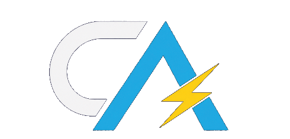

CA DeckOS
Welcome
Press A to start the project system.
System ready
CA DualDeck

Christian AshWhat you see is what you get. I’m Christian Ash, a software developer and digital designer who loves turning creative ideas into digital adventures.
Enter project deck